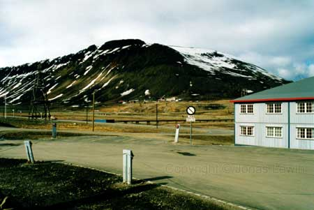
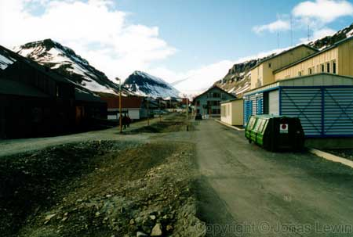
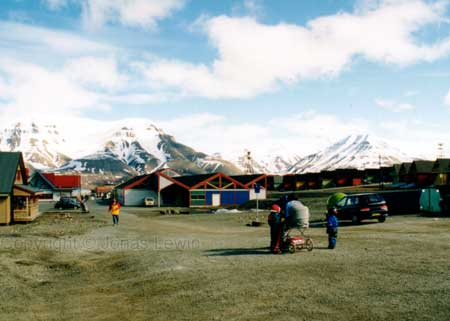
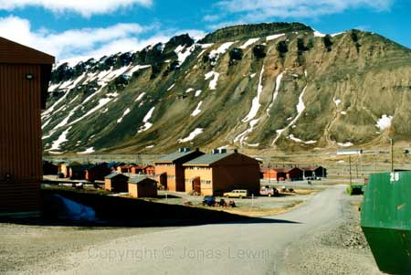

The capital of Svalbard: LongYearByen (The LongYear Village).
|
Close
to the mountains, and close to the sea.
The
main street of LongYearByen. A hundred meters in front of where we are
standing is the great shopping street (Still the same street as this one).
 The same mountain as on the first picture. We are now at one end of the village. Beyond us, there are no houses. You have to have a shotgun with you if you will go outside the village, due to the risk of being attacked by a Polar bear. So, make sure you stay close to your guide, as he/she is always armed then.
|